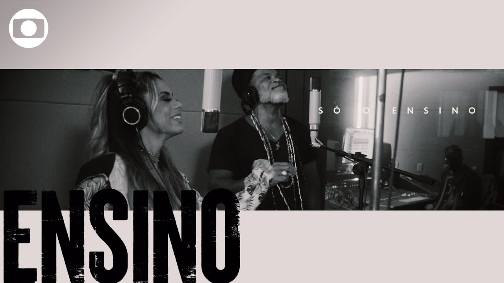

Hall Of Fame (feat. Will.I.Am) Yeah, you could be the greatest You can be the best You can be the King Kong banging on your chest You could beat the world You could beat the war You could talk to God, go banging on his door
You can throw your hands up You can beat the clock You can move a mountain You can break rocks You can be a master Don't wait for luck Dedicate yourself and you can find yourself
Standing in the hall of fame And the world's gonna know your name 'Cause you burn with the brightest flame And the world's gonna know your name And you'll be on the walls of the hall of fame
You could go the distance You could run the mile You could walk straight through hell with a smile You could be the hero You could get the gold Breaking all the records That thought never could be broke
Do it for your people Do it for your pride Never gonna know if you never even try Do it for your country Do it for you name 'Cause there's gonna be a day
When you're standing in the hall of fame And the world's gonna know your name 'Cause you burn with the brightest flame And the world's gonna know your name And you'll be on the walls of the hall of fame
Be a champion Be a champion Be a champion Be a champion On the walls of the hall of fame
Be students Be teachers Be politicians Be preachers
Be believers Be leaders Be astronauts Be champions Be true seekers
Be students Be teachers Be politicians Be preachers
Be believers Be leaders Be astronauts Be champions
Standing in the hall of fame And the world's gonna know your name 'Cause you burn with the brightest flame And the world's gonna know your name And you'll be on the walls of the hall of fame
(You can be a champion) You could be the greatest (You can be a champion) You can be the best (You can be a champion) You can be the king kong banging on your chest
(You can be a champion) You could beat the world (You can be a champion) You could beat the war (You can be a champion) You could talk to God, go banging on his door
(You can be a champion) You can throw your hands up (You can be a champion) You can beat the clock (You can be a champion) You can move a mountain (You can be a champion) You can break rocks
(You can be a champion) You can be a master (You can be a champion) Don't wait for luck (You can be a champion) Dedicate yourself and you can find yourself (You can be a champion) Standing in the hall of fame

Mais, cara, mais, cara (oh, oh)
Mais, cara, cara, mais, cara, cara
Mais, cara, mais, cara, cara
Não abandone o seu futuro (oh)
Dê duro, lute por ele (você não tá sozinho)
Não abandone o seu destino
Só o ensino te leva lá (você não tá sozinho)
Não abandone você mesmo Recarregue pra recomeçar (você não tá sozinho, você não tá sozinho) Agora tá difícil, irmão, aprender com a escola de mão Mas vai passar, mas vai passar Quem não parar, vai chegar lá
Não desista, resista, sim Não desista, desista, não Não desista do seu futuro Não desista da educação
Se não dá pra ir pra escola agora Não deixe a escola ficar longe de você Ligue, clique, se conecte Não desista do direito, seu direito de aprender
Ruxell No Beat
O mundo parou, parou Mas ninguém vai te parar, parar Tá chato, tá (tá, tá, tá, tá, tá, tá) tá dureza, tá (tá, tá, tá, tá, tá, tá) Mas uma certeza tenho, tenho Quem não parar, vai chegar lá, meu bem Meu bem
Não desista, resista, sim Não desista, desista, não Não desista do seu futuro Não desista da educação Não desista, resista, sim Não desista, desista, não Não desista do seu futuro Não desista da educação
Não abandone o seu futuro Dê duro, lute por ele (resista, resista) Não abandone o seu destino Só o ensino te leva lá (resista)